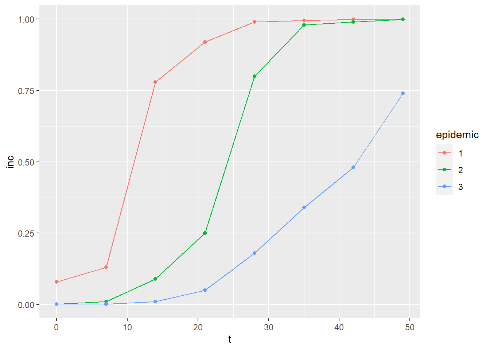
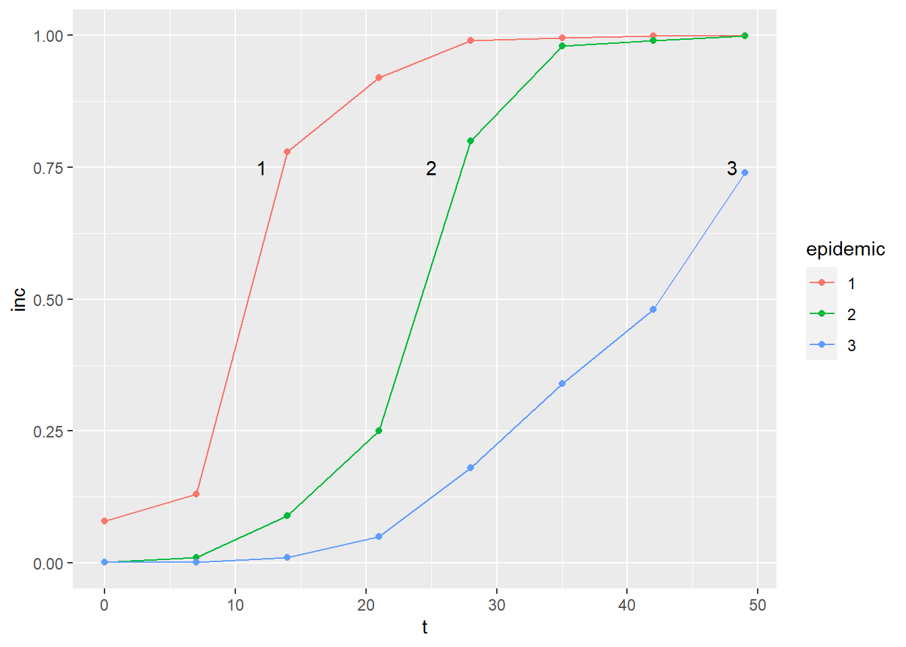
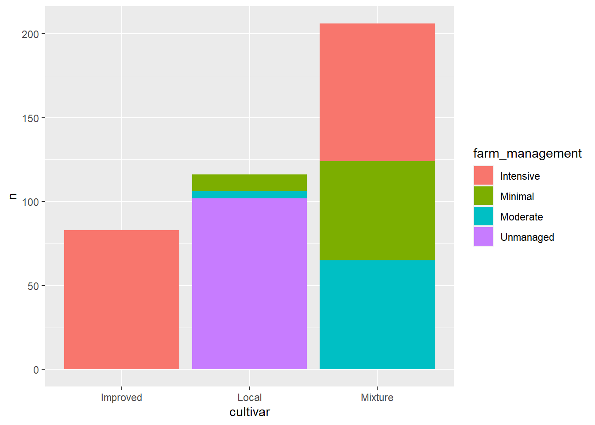
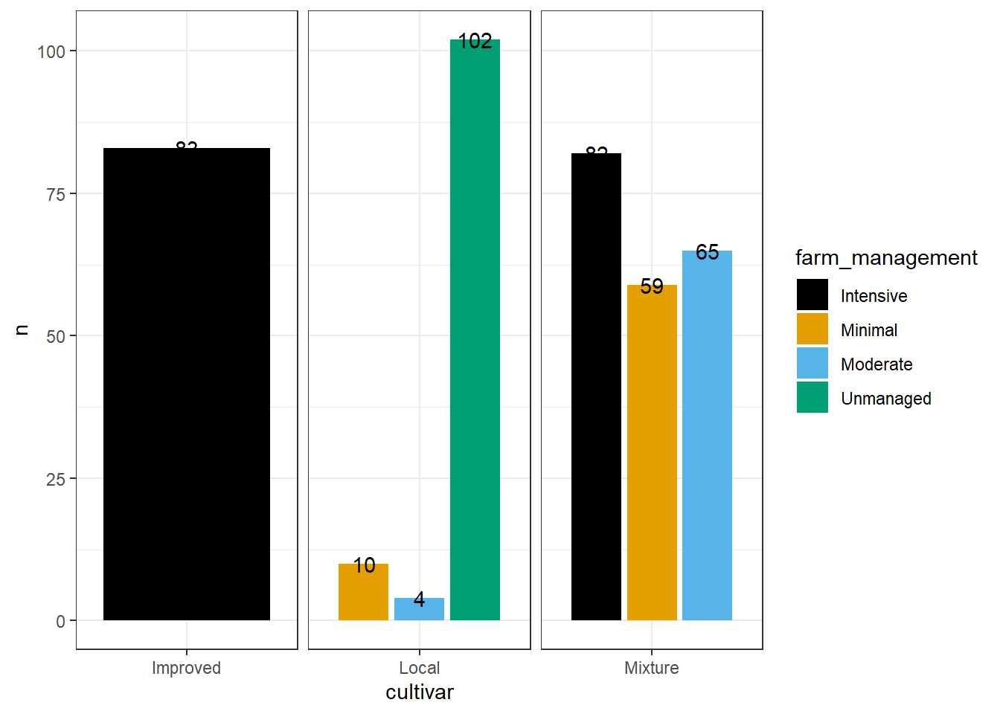
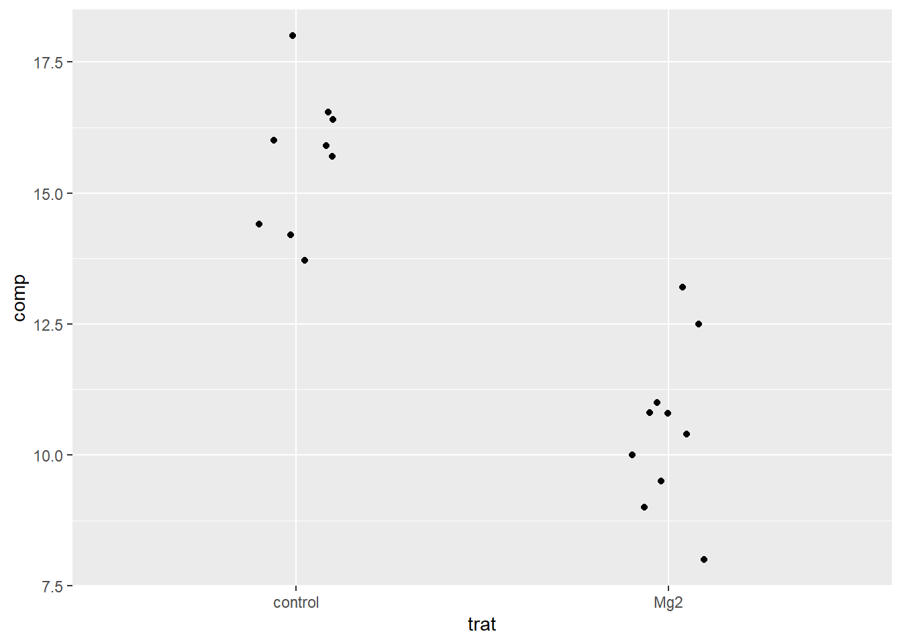
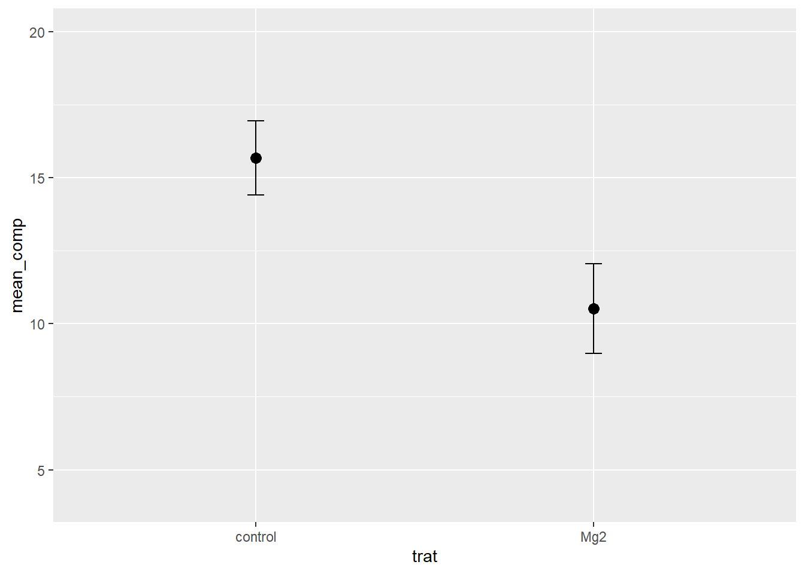

#usado para apenas uma coluna
dat1 <-c("comp", "9", "12.5", "10", "8", "13.2", "11", "10.8", "9.5", "10.8", "10.4", "13.72", "15.91", "15.7", "14.2", "15.9", "16.54", "18", "14.4", "16.41", "16")Aula 4
Baixar o pacote #datapasta
Com objetivo de conseguir importar dados de uma tabela que se tenha com uma coluna ou com mais de uma.
#usado para mais de uma coluna
dat2 <- tibble::tribble(
~trat, ~rep, ~comp,
"Mg2", 1L, 9,
"Mg2", 2L, 12.5,
"Mg2", 3L, 10,
"Mg2", 4L, 8,
"Mg2", 5L, 13.2,
"Mg2", 6L, 11,
"Mg2", 7L, 10.8,
"Mg2", 8L, 9.5,
"Mg2", 9L, 10.8,
"Mg2", 10L, 10.4,
"control", 1L, 13.72,
"control", 2L, 15.91,
"control", 3L, 15.7,
"control", 4L, 14.2,
"control", 5L, 15.9,
"control", 6L, 16.54,
"control", 7L, 18,
"control", 8L, 14.4,
"control", 9L, 16.41,
"control", 10L, 16
)Dados sobre os países:
visitas <- tibble::tribble(
~V1, ~V2, ~V3,
1L, "Argentina", 1L,
2L, "Austria", 1L,
3L, "Bolivia", 1L,
4L, "Cape Verde", 1L,
5L, "China", 1L,
6L, "Egypt", 1L,
7L, "Finland", 1L,
8L, "India", 1L,
9L, "Italy", 1L,
10L, "Malaysia", 1L,
11L, "Pakistan", 1L,
12L, "Poland", 1L,
13L, "Singapore", 1L,
14L, "Timor-Leste", 1L,
15L, "Uruguay", 1L,
16L, "Chile", 2L,
17L, "Paraguay", 2L,
18L, "Peru", 2L,
19L, "Ecuador", 3L,
20L, "France", 3L,
21L, "Netherlands", 4L,
22L, "Germany", 5L,
23L, "Hungary", 5L,
24L, "United Kingdom", 5L,
25L, "Colombia", 8L,
26L, "(not set)", 12L,
27L, "Spain", 16L,
28L, "Angola", 19L,
29L, "United States", 23L,
30L, "Portugal", 33L,
31L, "Mozambique", 43L,
32L, "Brasil", 43L)library(tidyverse)Warning: package 'tidyverse' was built under R version 4.3.3── Attaching core tidyverse packages ──────────────────────── tidyverse 2.0.0 ──
✔ dplyr 1.1.3 ✔ readr 2.1.4
✔ forcats 1.0.0 ✔ stringr 1.5.0
✔ ggplot2 3.4.4 ✔ tibble 3.2.1
✔ lubridate 1.9.3 ✔ tidyr 1.3.0
✔ purrr 1.0.2
── Conflicts ────────────────────────────────────────── tidyverse_conflicts() ──
✖ dplyr::filter() masks stats::filter()
✖ dplyr::lag() masks stats::lag()
ℹ Use the conflicted package (<http://conflicted.r-lib.org/>) to force all conflicts to become errors#os dados a seguir estão no formato largo
pepper <-
tribble(
~t, ~`1`, ~`2`, ~`3`,
0, 0.08, 0.001, 0.001,
7, 0.13, 0.01, 0.001,
14, 0.78, 0.09, 0.01,
21, 0.92, 0.25, 0.05,
28, 0.99, 0.8, 0.18,
35, 0.995, 0.98, 0.34,
42, 0.999, 0.99, 0.48,
49, 0.999, 0.999, 0.74
)
#Transfromar para o formato longo
pepper |>
pivot_longer(2:4,
names_to = "epidemic",
values_to = "inc") |>
#Criar grafico no ggplot (grafico de pontos com linhas)
ggplot(aes(t, inc, color = epidemic)) +
geom_point() +
geom_line()
#para retirar a leganda
#theme(legend.position = "none")pepper |>
pivot_longer(2:4,
names_to = "epidemic",
values_to = "inc") |>
#Criar grafico no ggplot (grafico de pontos com linhas)
ggplot(aes(t, inc, color = epidemic)) +
geom_point() +
geom_line() +
annotate(geom = "text",
x = 12,
y = 0.75,
label = "1") +
annotate(geom = "text",
x = 25,
y = 0.75,
label = "2") +
annotate(geom = "text",
x = 48,
y = 0.75,
label = "3")
Tabela de contingência
cr <- read_csv ("https://raw.githubusercontent.com/emdelponte/paper-coffee-rust-Ethiopia/master/data/survey_clean.csv")Rows: 405 Columns: 13
── Column specification ────────────────────────────────────────────────────────
Delimiter: ","
chr (7): region, zone, district, cultivar, shade, cropping_system, farm_mana...
dbl (6): farm, lon, lat, altitude, inc, sev2
ℹ Use `spec()` to retrieve the full column specification for this data.
ℹ Specify the column types or set `show_col_types = FALSE` to quiet this message.#restringir contagem para duas variaveis (region, zone), FORMATO LARGO
cr |>
count(region, zone)# A tibble: 9 × 3
region zone n
<chr> <chr> <int>
1 Oromia Bale 30
2 Oromia Ilu AbaBora 45
3 Oromia Jimma 45
4 Oromia West Wellega 45
5 SNNPR Bench Maji 45
6 SNNPR Gedio 45
7 SNNPR Keffa 45
8 SNNPR Sheka 45
9 SNNPR Sidama 60library(janitor)Warning: package 'janitor' was built under R version 4.3.3
Attaching package: 'janitor'The following objects are masked from 'package:stats':
chisq.test, fisher.test# para descrever um conjunto, FORMATO LONGO
cr |>
tabyl(region, zone) region Bale Bench Maji Gedio Ilu AbaBora Jimma Keffa Sheka Sidama West Wellega
Oromia 30 0 0 45 45 0 0 0 45
SNNPR 0 45 45 0 0 45 45 60 0# se inverte zona por region fica no formato largo
cr |>
tabyl(zone, region) zone Oromia SNNPR
Bale 30 0
Bench Maji 0 45
Gedio 0 45
Ilu AbaBora 45 0
Jimma 45 0
Keffa 0 45
Sheka 0 45
Sidama 0 60
West Wellega 45 0cr |>
tabyl(cultivar, farm_management) cultivar Intensive Minimal Moderate Unmanaged
Improved 83 0 0 0
Local 0 10 4 102
Mixture 82 59 65 0cr |>
count(farm_management, cultivar) |>
ggplot(aes(cultivar, n, fill = farm_management)) +
geom_col(position = "stack")
library(ggthemes)
#para desemplilhar e colocar uma barra ao lado da outra
cr |>
count(farm_management, cultivar) |>
ggplot(aes(cultivar, n, fill = farm_management, label = n)) +
geom_col(position = "dodge2") +
scale_fill_colorblind()+
theme_bw()+
theme(strip.text.x = element_blank())+
facet_wrap(~cultivar, scales = "free") +
geom_text(position = position_dodge (width = 0.9))+
facet_wrap(~cultivar, scales = "free_x" )
library(gsheet)Warning: package 'gsheet' was built under R version 4.3.3library(tidyverse)
mg <- gsheet2tbl("https://docs.google.com/spreadsheets/d/1aID5Dh6PlBVCKzU1j7k-WA6zuWQWE2NhtWEgdJtt5iA/edit#gid=921203844")
mg |>
ggplot(aes(trat, comp))+
geom_jitter(width = 0.1)
mg |>
group_by(trat) |>
summarise(mean_comp = mean(comp),
sd_comp = sd(comp)) |>
ggplot(aes(trat, mean_comp))+
geom_col(fill = "steelblue", width = 0.5)+
geom_point(size = 3)+
ylim(4, 20)+
geom_errorbar(aes(ymin = mean_comp - sd_comp,
ymax = mean_comp + sd_comp),
width = 0.05)Warning: Removed 2 rows containing missing values (`geom_col()`).
```{r}